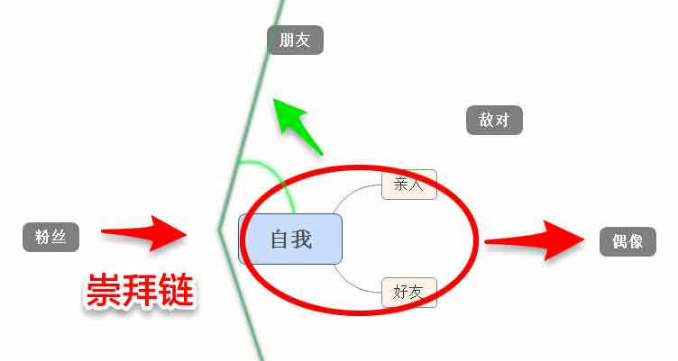

社交圈中人际关系分类和处理
人际关系的分类与处理是我认为生活中常用且重要的生活方法论，由此我对这方面有过较多的思考和尝试。在此，我将把这些经验记录下来以供参考。
人际关系的分类与处理，其中，前者是后者的方向，即面对具有什么样的关系的人；后者是前者的方法，即怎么去应对。
我们首先来谈个可能比较感性的问题。
有人认为，人与人之间关系的联系来源于感情，而我们不应该物化的去理性衡量，并从感情上不能接受衡量人与人关系的程度以及“虚伪的”用不同方式去应对他人。对此，我只能说我个人从情感上对这种观念表示理解，但在本质上，我认为世界是以物质为基础的，人是理性且被物质左右的，并且人应当脱离感性去思考问题的。
个人观念差别我不能强求，但我只能说这种可衡量，合乎逻辑与现实，能预期且能控制的人际处理策略是符合理性思考与支持唯物、现实主义的人的。
人与人关系在现实的差异是无法感情上避免的，玻璃心小公主总是受不了这些。至于有策略的去面对他人，在我看来并非所谓的虚伪。因为人本身就是无法完全展示自己或完全理解他人的个体。有策略的面对他人并不涉及到道德上的虚伪与违背交友的真诚。
社交关系分类
根据我个人的思考经验，我所认为的人际关系分类有这么几类。
亲人、好友、朋友、其他。
重要程度由右至左，每个人重要程度可能不同，看个人。
其中亲人细分有父母、子女、爱人、兄妹、亲戚。同样，重要程度排序不具有代表性，应人而异。
对于大家的重点不在于别人怎么看其中各类人的重要程度，而在于自己是否有一套合乎自己逻辑的重要程度排序。
且这个排序一旦建立，就应该刻到心底，以后不管面对什么问题，因按照排序先优先考虑，这可以防止在遭遇突发情况时被其他如感情因素等影响而做出不理智的判断。例，突然背负重债的亲戚请求你卖掉自己家房子去救他。很明显，在上面这一套重要排序下，是绝对不可能同意且无法理解的行为。所以，理性的面对人际关系首先要做的就是建立自己对人重要程度衡量后的排序，这样做的目的就在于以后面对情况的时候可以规避情感等因素带给你的影响。
好友和朋友其实是很相近的一类，但我最后还是将两者划分开，原因是因为我认为在这两者上面，我们在态度上是有差别的。
好友有知己、情感深厚者、志同道合者，这是我对好友这个类别的分类。而朋友有同事、同学、只是认识的人等。可以看出，两者之间往往有身份交叉。
但我们对待这两者是有差别的，前者往往是主动的双方交流，而后者是被动的。如，一个很久没交流的老同学，但我们还是有时没时聊上一下，一聊总是，嘿，还是和你相处感觉舒畅，这种要么上真是臭气相投的知己了，要么就是感情深厚的好友。而有的人，你不会有什么想和他主动交流的欲望。这种好友与朋友的差别，大家自行体会吧。
其他这个类别是我想不出什么精确的形容的分类。里面可以有很多种我们生活中的人。偶遇认识的有缘人啦，讨厌的人啦，聊过几句的人啦，炮友啦，崇拜的明星或者大牛啦，或者是崇拜自己的粉丝啦之类之类的。这类人在我们生活中有很多，他们是我们交际圈的边缘人，他们有的是因为不受我们喜欢成为边缘人，有的是因为离我们距离太遥远成为边缘人，还有的是因为我们不够了解他们或他们没有向我们展示我们感兴趣的点。 这个类别的人最大的特点是不深入我们的生活，第二大特点是可塑性强，他们任一可能成为我们前三大类中的一员。
以上，我们就简单的先分出了四类不同的人。
不同关系之间的影响
回到最开始那张图，我们开始讲这些不同的人在我们生活中意味着什么，他们对我们有什么影响，我们又是处在他们怎么一个位置。
从图上可以看出，我将人之间的地位划分为了有一个方向的三个级，这里的地位并不是指重要程度之类的，稍微准确一点描述，这个方向应该指“靠近方向”。(图中显示未不断右倾)
即，我们总是展现出向上级靠近的趋势。我们的上级也会向他们的上级靠近，这就形成了一个链条，我称之为“崇拜链”。
我们的上级总是放着这些人：我们感兴趣的人，我们喜欢的人，我们学习的人，我们崇拜的人。我们不妨称之为“偶像”吧。我们总是试图靠近他们，试着拉近与他们的距离，甚至试着成为他们或拥有他们，这来源于我们的欲望，而他们其实相当于给予了我们动力与方向。他们在重要程度排序中可能不算最重要的，但却对我们影响极大。
我们的平级呆着的是我们平时接触的人，亲人、好友、朋友等皆在此列。我们因为和他们接触很多，既知道他们很厉害的地方，也知道他们让我们自己不喜欢、不感兴趣、讨厌的地方。所以我们对他们完全崇拜不起来，且稍微自信一点的人，对自己身边的人平级很是鄙视。
而我们下级则是对我们感兴趣、喜欢我们、崇拜我们的人。这一类我们就统称为“粉丝”吧。
以上，我们生活中的各类人又在这个关系图中找到了新的位置。（敌对是为在做图的时候加进去的，用以表示我们感到警惕、受威胁、敌视的人。）
值得注意的是。首先这个关系只会是单向的，会变动的是人。比如，我们会因为对上级愈加了解、与上级愈加靠近而导致上级的人跌下神坛，变成我们的平级。而我们的下级则也有可能展现出我们感兴趣、喜欢的特点而被我们捧至上级。其次，我们总是以红圈为生活的中心，在蓝色线以右，是我们的“视界”，我们在生活中只能注视这一类中的人，而很难注意到左侧的人。而红圈随绿色箭头到蓝线的空间，是我们每个人的开放程度。当一个人越性格开放，则红圈向右侧扩大，直至到达蓝线。
怎样应对不同的关系
从关系图，我们就可以看出我们大部分人对他人的一贯态度。而我认为，我们首先应该做的就是顺应，或者说利用人们这种一贯态度。
我们应该谨慎的选取人成为我们的“偶像”，否则就是盲目的崇拜。我们要学习、要不断的展示自己的特点，将上级与我们之间的距离拉近，从神坛上拉下来。我们应该尽量让他人成为我们的“粉丝”，否则我们将泯然众人、毫无存在感、毫无意义。
这可以说大方向上，应对与人关系的方式——不断的展示自己。
而对于我们的平级，我们必须学会有选择的展示自己。
面对与我们有不同关系的人，控制我们自己，展现他人希望的我，就是我们应对关系的基本方针。